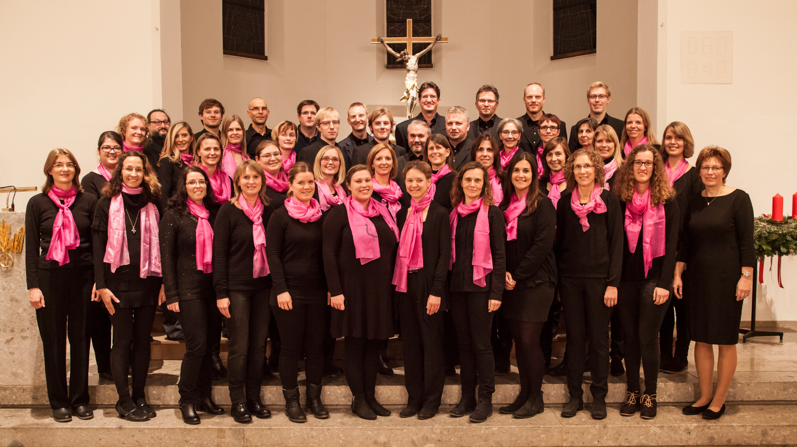

Herzlich Willkommen!
Wir sind der Chor LyricoVocale aus Oberdorfen.
Schaut euch ruhig bei uns um und lernt uns kennen.
Herzlich Willkommen!
Wir sind der Chor LyricoVocale aus Oberdorfen.
Schaut euch ruhig bei uns um und lernt uns kennen.
Chor
{% capture about_include %}{% include about.md %}{% endcapture %}
{{ about_include | markdownify }}